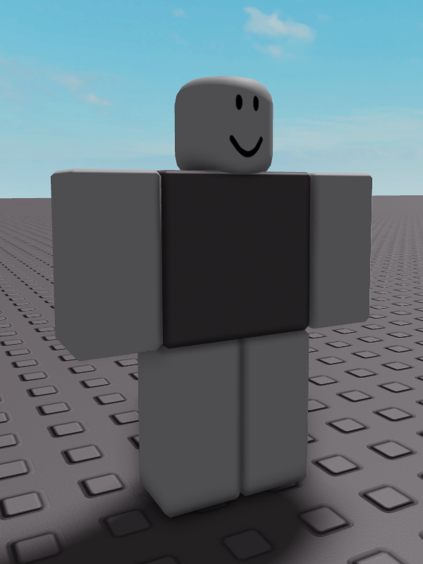

Baldman

Baldman is a joke character created by LuaTastic and ColdCat. He has a grey torso while his arms, legs and head are all white.
Trivia
• Baldman is the default R6 rig for moon animator.
• Baldman has comitted multiple war and federal crimes, including: murderer, vehicular manslaughter, freezing people to death, sawing someone in half with lasers, dissolving people in sulphuric acid, lobotomising people, illegal handling of firearms, robbery, multiple hit and runs, destruction of property and trespassing.
• Baldman has vandalised the pls donate fandom wiki multiple times.
• Baldman briefly appears in ColdCat's unfinished project.
• Baldman has comitted multiple war and federal crimes, including: murderer, vehicular manslaughter, freezing people to death, sawing someone in half with lasers, dissolving people in sulphuric acid, lobotomising people, illegal handling of firearms, robbery, multiple hit and runs, destruction of property and trespassing.
• Baldman has vandalised the pls donate fandom wiki multiple times.
• Baldman briefly appears in ColdCat's unfinished project.